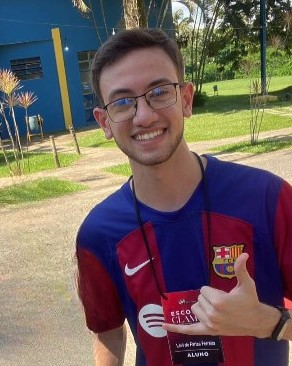
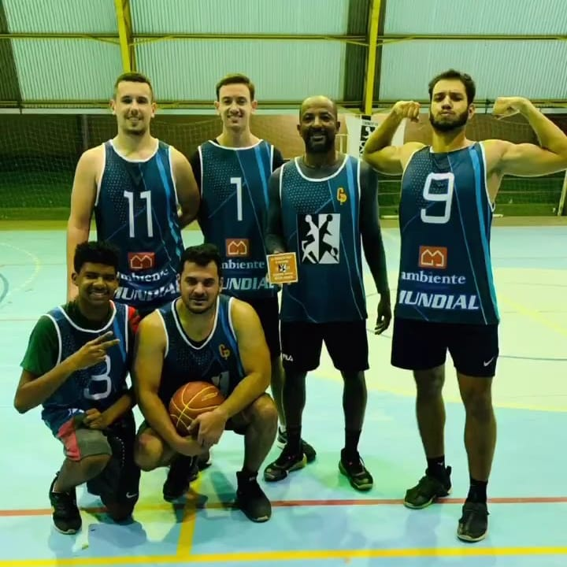
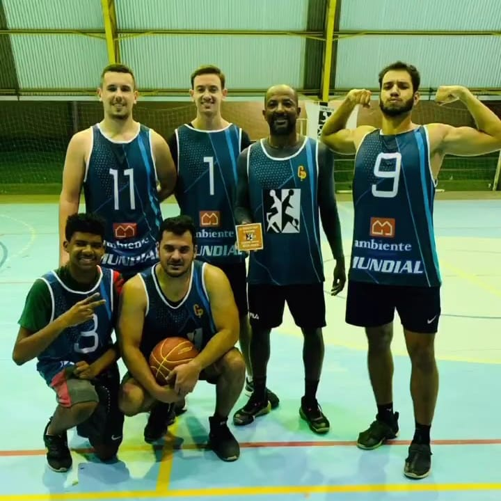

Quem Sou Eu?

Sempre tive muita facilidade com Matemática e raciocínio lógico, porém não fazia ideia que encontraria os 2 na área Computacional. Desde então comecei a buscar conhecimento e profisionalizações que me ajudassem a entender mais sobre o conteúdo e hoje, por mais iniciante que seja, tenho uma boa base para desenvolver sites, lojas virtuais e sistemas!
Além da minha vida estudantil e profissional, gosto bastante de me envolver com a música. Atualmente toco teclado e bateria e tenho procurado aprimorar mais nos instrumentos.
O que Eu Faço?

 
